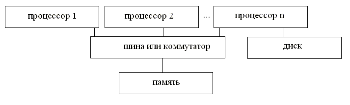
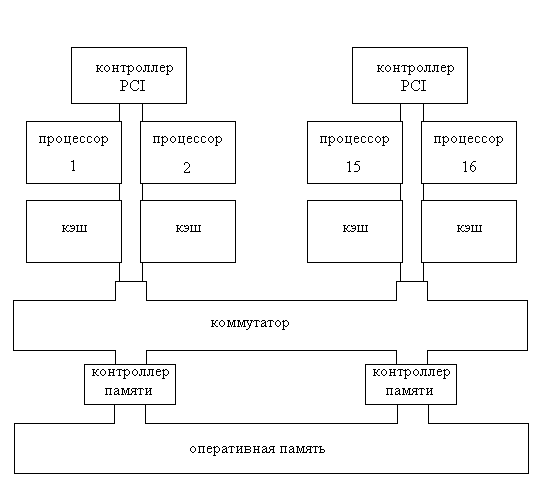
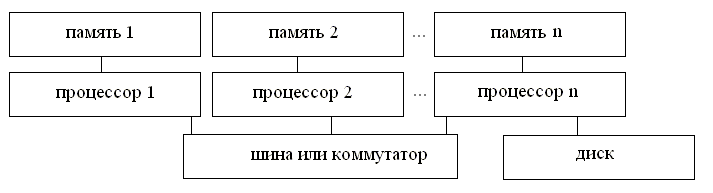
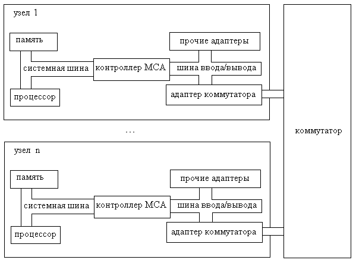
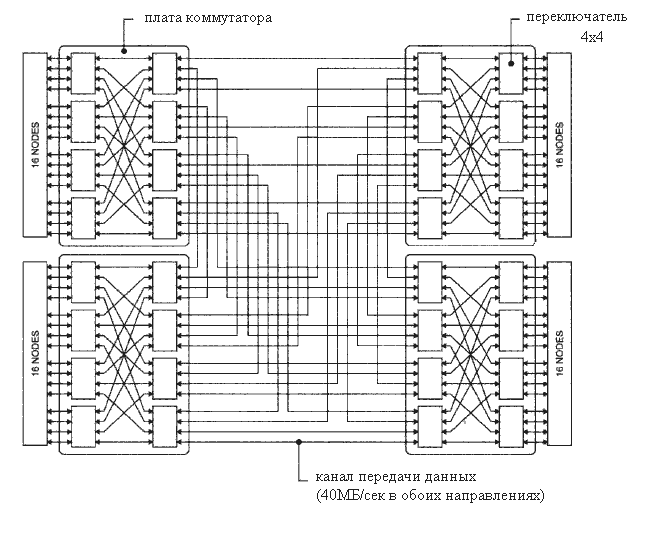
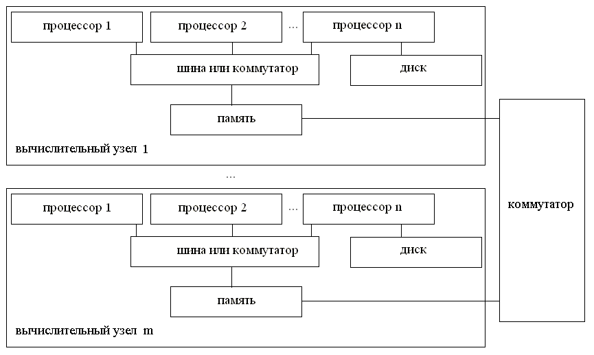
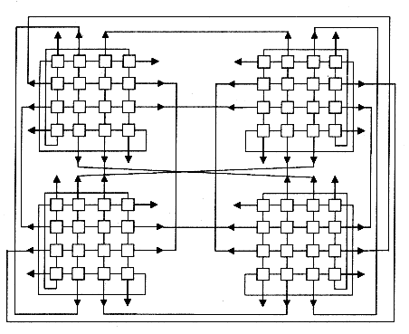
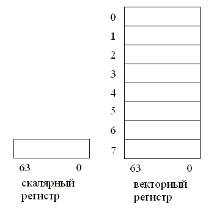
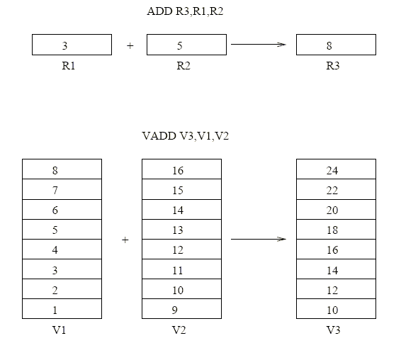
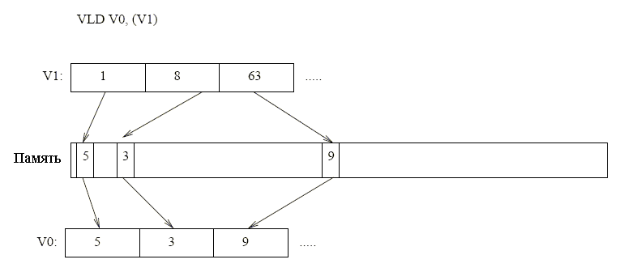

5. ВС с крупноблочным параллелизмом
5.1. Введение5.2. Классы параллельных ВС
5.3. SMP
5.4. ASMP
5.5. MPP
5.6. NUMA
5.7. Кластеры
5.8. Параллельные векторные системы
Глава 5. ВС с крупноблочным параллелизмом
1. Введение
Наряду с улучшением элементной базы, архитектура с крупноблочным параллелизмом является одним из путей дальнейшего повышения производительности ВС. ВС с крупноблочным параллелизмом появились более 40 лет назад. Изначально к ним относилсь самые высокопроизводительные ВС, доступные ограниченному числу организаций. По мере их развития многократно увеличились не только их количество и многообразие, но и доля от общего числа ВС. С появлением многоядерных процессоров, ВС с крупноблочным параллелизмом проникли и в персональные компьютеры.
2. Классы параллельных ВС
Как было отмечено в главе 2, классификация Флинна не подходит для современных параллельных ВС, почти все они попадают в один класс - MIMD. В настоящее время принято классифицировать параллельные системы по следующим аспектам архитектуры:
1) способу соединения процессоров и памяти,
2) однородности процессоров или вычислительных узлов,
3) параметрам коммуникационной сети, связывающей вычислительные узлы.
Выделяют следующие основные классы параллельных ВС [1, 2]:
1) SMP (Symmetric Multi Processing, Симметричная Мультипроцессорная система) - класс ВС с несколькими одинаковыми процессорами и с общей, физически единой памятью, доступной всем процессорам системы;
2) ASMP (Asymmetric multiprocessing, ассимметричная Мультипроцессорная система)- класс ВС с несколькими разными процессорами и с общей, физически единой памятью, доступной всем процессорам системы;
3) MPP (Massively Parallel Processor, Массово-параллельная система) - класс ВС с распределенной памятью, где каждый процессор имеет доступ только к своей локальной памяти;
4) NUMA (Non-Uniform Memory Access, Системы с неоднородным доступом к памяти) - гибрид первых двух классов, в котором память физически распределена, но логически доступна с любого процессора;
5) кластеры;
6) параллельные векторные.
3. SMP
SMP системы[3] - ВС, в которых имеется два или более одинаковых процессора и единая общая память, физически разбитая на отдельные блоки (см. рис. 1). Логически все процессоры видят одно и то же адресное пространство. Все процессоры имеют доступ к любой точке памяти с одинаковой скоростью. Пересылку данных между процессорами можно реализовывать использованием общих участков памяти. При небольшом числе процессоров для подключения их к памяти используется общая шина. При этом в каждый момент времени только один процессор может иметь доступ к памяти. В более мощных системах, где число процессоров больше, вместо шины используются коммутаторы. В таком случае возможен одновременный доступ нескольких процессоров к памяти, если они обращаются к разным ее блокам.

Рис. 1. Структура SMP системы.
К достоинствам SMP систем можно отнести легкость написания параллельных программ для них. Наличие общей памяти позволяет избежать программирования коммуникаций между параллельно исполняемыми ветвями программ. Параллельные программы, в которых велик объем массивов данных с глобальной видимостью, могут иметь эффективные реализации на SMP. Из всех классов ВС с крупноблочным параллелизмом для SMP доработка системного программного обеспечения наименее трудоемка. Для наиболее распространенных ОС (Windows NT, Linux) в ядре реализована возможность использования SMP систем.
Основной недостаток SMP - плохая масштабируемость. В существующих системах число процессоров не превышает нескольких десятков. Шина не может работать эффективно при большом числе процессоров, а сложность коммутатора существенно возрастает при увеличении числа процессоров и блоков памяти.
SMP архитектура впервые появилась в машине B5500, построенной фирмой Burroughs в 1964 г. B5500[4, 5] - первая ЭВМ третьего поколения, а также первая ВС с архитектурой SMP. Также это одна из первых серийных машин с аппаратной реализацией стека для вычислений и аппаратной реализацией виртуальной памяти.
Другие примеры SMP систем - Symmetry[6], HP 9000 V-class [7]. С появлением двухядерных процессоров (и процессоров с большим числом ядер) SMP системы стали распространяться и в персональных компьютерах. В сентябре 2007 г. появились многоядерные процессоры архитектуры ARM [8] для наиболее компактных ВС (встраиваемых ВС и карманных ПК).

Рис. 2. HP 9000.
HP 9000 V [7] (см. рис. 2) была (конец 1990-х гг.) самой высокопроизводительной из линейки HP 9000. В HP 9000 V использовалось до 16 64-битных процессоров c архитектурой PA-RISC 2.0 (PA-8200, PA-8500). С 240MHz PA-8200 пиковая производительность системы достигает 15.36 GFLOPS. Объем оперативной памяти достигает 16ГБ. Суммарная скорость обменов с памятью составляет 15.3 ГБ/сек. Система включает до 24 контроллеров ввода/вывода стандарта PCI с пропускной способностью каналов 1.9 ГБ/сек. Процессоры имеют локальную кэш память и PCI контроллеры, с помощью которых можно подключать внешнюю дисковую память и присоединяться к сети.
Доступ к оперативной памяти обеспечивает коммутатор 8 на 8. В 16-процессорном варианте два процессора используют один вход коммутатора. Коммутатор позволяет одновременно производить пересылки, если они не используют одни и те же порты. Использование коммутатора позволяет не допускать падения производительности с ростом числа процессоров, неизбежного в случае систем с общей шиной. 8 портов коммутатора обслуживают до 8 процессорных блоков (через агенты транспортировки данных) и 8 "противоположных" портов подключены к платам памяти (через контроллеры памяти). Коммутатор работает на частоте 120МГц. Ширина пути между агентом и контроллером памяти составляет 64 бит. Таким образом, пропускная способность одного порта коммутатора по каждому направлению составляет 960 МБ/сек. Коммутатор работает без блокировок, т.е. все 8 портов могут передавать и принимать информацию одновременно (если при этом два агента не обращаются к одному контроллеру памяти). Таким образом, пиковая пропускная способность всего коммутатора составляет 15.36 ГБ/сек.
4. ASMP
ASMP[2] системы отличаются от SMP систем тем, что в них используются разные процессоры. На процессоры возлагаются разные задачи. Например, отдельный процессор может выполнять операции ввода/вывода.
В современных параллельных ВС этот класс практически не применяется. Примеры ASMP систем - VMS V.3. В некотором смысле ВС с разнообразными сопроцессорами (математическим, графическим или сопроцессором ввода/вывода) можно отнести к ASMP.
5. MPP
MPP системы[9] состоят из двух и более вычислительных узлов, связанных быстрой коммуникационной сетью (см. рис. 3). Вычислительный узел содержит один или несколько процессоров, локальную память и коммуникационный процессор или сетевой адаптер. Процессор имеет доступ только к своей локальной памяти. Взаимодействие с другими вычислительными узлами осуществляется посылкой сообщений по коммуникационной сети..

Рис. 3. Структура MPP системы.
Достоинство архитектуры MPP - хорошая масштабируемость. MPP система может иметь тысячи вычислительных узлов, которые содержат один или несколько процессоров. Максимальное число узлов в существующих на настоящий момент системах - 65536 двухпроцессорных узлов машины IBM BlueGene/L.
Недостаток MPP - необходимость программирования коммуникаций для пересылки данных, вычисленных или хранящихся в одном, но затребованных в другом вычислительном узле. При этом, эффективность параллельных программ падает, если отношение количества пересылок данных к количеству вычислений возрастает. Т.е. некоторые параллельные программы, эффективно исполняемые на SMP системах, будут плохо исполняться на на ВС с архитектурой MPP. Для работы с MPP ВС используются коммуникационные библиотеки. Наиболее распространенные из них - MPI[10, 11] и PVM[12].
Примеры MPP систем - BlueGene/L[13], Earth Simulator, ASCI White, IBM RS/6000 SP2, Intel PARAGON/ASCI Red, CRAY T3E, Hitachi SR8000, транспьютерные системы Parsytec.

Рис. 4. Архитектура ВС IBM SP2.
IBM SP2[14, 15] (выпускалась с 1994 по 2000) ― MPP ВС, представляющая собой набор рабочих станций RS/6000, соединенных высокопроизводительным коммутатором (см. рис. 4). Число узлов - от 2 до 512.

Рис. 5. Коммутатор SP2.
Узлы SP2 имеют SMP-архитектуру и содержат от 2 до 8 процессоров. В качестве ЦП использовались RISC-процессоры POWER2, P2SC и PowerPC c различными тактовыми частотами (66-135MHz). Каждый узел имеет от 64 мегабайт оперативной памяти, "локальный" жесткий диск, слоты расширения стандарта Micro Channel и, как правило, оснащен адаптером высокопроизводительного коммутатора (high perfomance switch, или SP switch, см. рис. 5).
Каждый узел работает под управлением ОС AIX и другого стандартного системного ПО для RS/6000; все ПО устанавливается отдельно на каждом узле. Кроме того, вместе с SP поставляется набор ПО под общим названием Parallel Systems Support Programs (PSSP), облегчающий установку и администрирование системы. Параллельные приложения исполняются под управлением Parallel Operating Environment (POE) или собственной реализации библиотеки MPI, которая оптимизирована для архитектуры RS/6000 SP. Также доступна реализация PVM и HPF (High Performance Fortran). Имеются следующие типы узлов:
- счетный узел;
- узел параллельной файловой системы;
- узлы традиционной файловой системы;
- шлюзовые узлы для связи с внешним миром.
6. NUMA
NUMA системы[1, 16] представляют из себя гибрид SMP и MPP. Физически память в NUMA распределена по вычислительным узлам (см. рис. 6). Программно она представляется единой памятью . Вычислительный узел NUMA имеет несколько процессоров, общую шину и общую память. Вычислительным узлы объединены с помощью высокоскоростного коммутатора. Поддерживается единое адресное пространство, аппаратно поддерживается доступ к удаленной памяти, т.е. к памяти других модулей.

Рис. 6. Структура NUMA системы.
Вариант NUMA с аппаратной поддержкой когерентности кэша называется ccNUMA (cache-coherent NUMA).
Достоинство NUMA - в том, что (как и в SMP) нет нет необходимости программировать коммуникации. Можно пользоваться общей памятью. Но так как физически она разделена доступ к той памяти, которая находится в локальном узле, происходит существенно быстрее, чем к удаленной. Следовательно, для достижения эффективного использования NUMA параллельные программы должны преимущественно использовать локальную память своего вычислительного узла.
Хотя масштабируемость NUMA выше, чем у SMP, она ограничивается объемом адресного пространства и возможностями операционной системы по управлению большим числом процессоров. Сейчас самое большое число процессоров составляет 256. В ccNUMA ограничение также накладывается возможностями аппаратуры поддержки когерентности кэшей.
Примеры NUMA систем: HP HP 9000 V-class в SCA-конфигурациях, SGI Origin2000, Sun HPC 10000, IBM/Sequent NUMA-Q 2000, SNI RM600.
7. Кластеры
Кластеры можно считать дешевыми аналогами MPP систем. Кластер содержит один управляющий узел, несколько или много счетных узлов и сеть для коммуникаций между всеми узлами. Управляющий узел решает такие задачи, как доступ пользователей к кластеру, хранение данных пользователей, выделение счетных узлов пользователям, ведение очереди задач пользователей, передача исходных данных и программ счетным узлам и прием от них результирующих данных. Вычислительные узлы кластеров строятся на базе персональных компьютеров или рабочих станций (однопроцессорных или SMP). Для коммуникаций между ними используют сетевое оборудование, как правило Gigabit Ethernet, ATM, SCI или Myrinet. Если не все вычислительные узлы кластера одинаковы, то он называется гетерогенным. Как правило, узлы кластера одинаковы и собраны компактно в одну или несколько стоек в одном помещении. Если узлы географически разнесены, то такие системы можно отнести и к GRID системам (см. главу 7).
Кластеры можно разделить на два вида в зависимости от того, являются ли их узлы выделенными для работы только в кластере.
Сеть рабочих станций (NOW, network of workstations) - разновидность кластера, узлы которого - рабочие станции, используемые пользователями в своей повседневной работе. Когда машины простаивают, что отслеживается кластерным ПО, они начинают использоваться для вычислений. Достоинство NOW - возможность получить кластер на базе уже существующего оборудования, не потратив никаких дополнительных средств. Но NOW имеет два крупных недостатка. Во-первых, нет гарантированной производительности, так как в любой момент большинство пользователей может возобновить работу, и все вычисления приостановятся. Во-вторых, у NOW очень слабые коммуникации между узлами, так как не создавалась выделенная сеть для коммуникаций между счетными узлами. Фактически, такие кластеры можно эффективно использовать только для задач, разбиваемых на независимые части. Примеры ПО для организации NOW - Pirhana, SETI.
По сравнению с MPP системами кластеры существенно дешевле, так как они делаются из массово производимых и недорогих комплектующих. Недостаток кластеров по сравнению с MPP - более медленные коммуникации. Пропускная способность специально созданных для MPP коммутаторов существенно выше, чем сеть в кластерах. В некоторых кластерах увеличение пропускной способности достигается использованием двух сетей. Одна используется для передачи данных между управляющим узлом и счетными. Другая служит для коммуникаций между счетными узлами.

Рис. 7. кластер МВС-1000/128.

Рис. 8. Топология кластера МВС-1000/128.
Кластер МВС-1000/128 (рис. 7), установленный в Сибирском Суперкомпьютерном центре при Институте Вычислительной Математики и Математической Геофизики СО РАН, имеет 64 двухпроцессорных узла (рис. 8). Его пиковая производительность - 196 GFLOPS. Используются 64-разрядные процессоры DEC Alpha 21264 (667 МГц/ 4 Мб SLC). Суммарный объем оперативной памяти - 128 Гб, суммарный объем дисковой памяти узлов - 3840 Гб.
8. Параллельные векторные системы
Параллельные векторные ВС (PVP) [17] относятся к SIMD системам. Рассматривавшиеся ранее ВС - скалярные. Основной тип данных в них - n-битные слова. Они собраны в регистровые файлы. Команды процессора в скалярных системах обрабатывают отдельные слова. Векторные ВС оперируют с векторами слов. Векторы могут храниться в основной памяти, или для них может быть реализован регистровый файл с векторными регистрами (см. рис. 9). Одна команда процессора позволяет обрабатывать все элементы вектора. Например, команда сложения V3=V1+V2 попарно складывает элементы векторов V1, V2 и записывает сумму в элементы вектора V3 (см. рис. 10). Возможна выборочная обработка элементов. Наличие регистров маски позволяет выполнять векторные команды не над всеми элементами векторов, а только над теми, на которые указывает маска.

Рис. 9. Скалярный и векторный регистры.

Рис. 10. Скалярная и векторная команду сложения.
Команды загрузки и сохранения вектора позволяют использовать вектора, хранящиеся в памяти как в сплошном, так и в разреженном виде. Команда загрузки вектора в разреженном представлении принимает на вход вектор V1, хранящий адреса элементов вектора V0 для загрузки (см. рис Рис. 11).

Рис. 11. Команда загрузки вектора в разреженном представлении.
Большинство векторных ВС реализуют механизм зацепления команд. Он заключается в том, что если одна команда использует вектор, являющийся результатом работы предыдущей команды, то ее выполнение может начинаться до полного выполнения предыдущей команды. Рассмотрим, например, следующую последовательность команд, работающих с векторными V-регистрами в компьютерах Cray [18]:
V2=V0*V1
V4=V2+V3
Ясно, что вторая команда не может начать выполняться сразу вслед за первой - для этого первая команда должна сформировать регистр V2, что требует определенного количества тактов. Средство зацепления позволяет, тем не менее, второй команде начать выполнение, не дожидаясь полного завершения первой: одновременно с появлением первого результата в регистре V2 его копия направляется в функциональное устройство сложения, и запускается вторая команда.
Примеры векторных ВС: STAR 100, ASC, CRAY-1, CRAY J90/T90, CRAY SV1, CRAY X1, VPP.
Ссылки на литературу и ресурсы сети
[1] Основные классы современных параллельных компьютеров. - http://www.parallel.ru/computers/classes.html
[2] http://en.wikipedia.org/wiki/Asymmetric_multiprocessing
[3] Symmetric multiprocessing. - < http://en.wikipedia.org/wiki/Symmetric_multiprocessing
[4] http://www.thocp.net/hardware/mainframe.htm
[5] http://en.wikipedia.org/wiki/Burroughs_large_systems
[6] http://en.wikipedia.org/wiki/Sequent_Computer_Systems
[7] http://www.docs.hp.com/en/B3909-90003/index.html
[8] http://infocenter.arm.com/
[9] Massive parallelism. - http://en.wikipedia.org/wiki/Massive_parallelism
[10] W. Grop, E. Lusk, R. Thakur. - Using MPI-2. Advanced Features of the Message-Passing Interface. - MIT Press. - 1999
[11] G. E. Karniadakis, R. M. Kirby II. - Parallel Scientific Computing in C++ and MPI. - Cambridge University Press
[12] A. Geist, A. Beguelin, J. Dongarra, W. Jiang, R. Manchek, V. Sunderam. - PVM: Parallel Virtual Machine. A Users Guide and Tutorial for Networked Parallel Computing. - MIT Press. - 1994
[13] http://en.wikipedia.org/wiki/Blue_Gene
[14] В. Шмидт. - Системы IBM SP2. - Открытые системы. - 1995. - вып. 6. - http://www.osp.ru/os/1995/06/178759/
[15] А. Андреев. - Обзор архитектуры суперкомпьютеров серии RS/6000 SP корпорации IBM. - http://www.parallel.ru/computers/reviews/sp2_overview.html
[16] Non-Uniform Memory Access. - http://en.wikipedia.org/wiki/Non-Uniform_Memory_Access
[17] Vector Architectures. - http://cva.stanford.edu/classes/ee482s/scribed/lect11.pdf
[18] Cray-1. - http://en.wikipedia.org/wiki/Cray-1